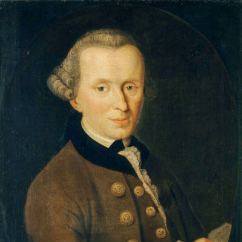
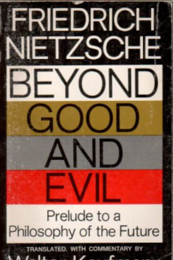

Man's Search for Meaning
Viktor E. Frankl
About author
Man's Search for Meaning is a 1946 book by Viktor Frankl chronicling his experiences as a prisoner in Nazi concentration camps during World War II, and describing his psychotherapeutic method, which involved identifying a purpose in life to feel positive about, and then immersively imagining that outcome. According to Frankl, the way a prisoner imagined the future affected his longevity. The book intends to answer the question "How was everyday life in a concentration camp reflected in the mind of the average prisoner?" Part One constitutes Frankl's analysis of his experiences in the concentration camps, while Part Two introduces his ideas of meaning and his theory called logotherapy.
Read more...
Critique of Pure Reason
Immanuel Kant
About author

The Critique of Pure Reason (German: Kritik der reinen Vernunft; 1781; second edition 1787) is a book by the German philosopher Immanuel Kant, in which the author seeks to determine the limits and scope of metaphysics. Also referred to as Kant's "First Critique", it was followed by his Critique of Practical Reason (1788) and Critique of Judgment (1790). In the preface to the first edition, Kant explains that by a "critique of pure reason" he means a critique "of the faculty of reason in general, in respect of all knowledge after which it may strive independently of all experience" and that he aims to reach a decision about "the possibility or impossibility of metaphysics."
Read more...

Beyond Good and Evil
Friedrich Nietzsche
About author
Beyond Good and Evil: Prelude to a Philosophy of the Future (German: Jenseits von Gut und Böse: Vorspiel einer Philosophie der Zukunft) is a book by philosopher Friedrich Nietzsche that covers ideas in his previous work Thus Spoke Zarathustra but with a more polemical approach. It was first published in 1886 under the publishing house C. G. Naumann of Leipzig at the author's own expense and first translated into English by Helen Zimmern, who was two years younger than Nietzsche and knew the author.
Read more...
12 Rules for Life
Jordan Peterson
About author
12 Rules for Life: An Antidote to Chaos is a 2018 self-help book by the Canadian clinical psychologist Jordan Peterson. It provides life advice through essays in abstract ethical principles, psychology, mythology, religion, and personal anecdotes. The book topped bestseller lists in Canada, the United States, and the United Kingdom, and has sold over five million copies worldwide. Peterson went on a world tour to promote the book, receiving much attention following an interview with Channel 4 News. The book is written in a more accessible style than his previous academic book, Maps of Meaning: The Architecture of Belief (1999). A sequel, Beyond Order: 12 More Rules for Life, was published in March 2021.
Read more...